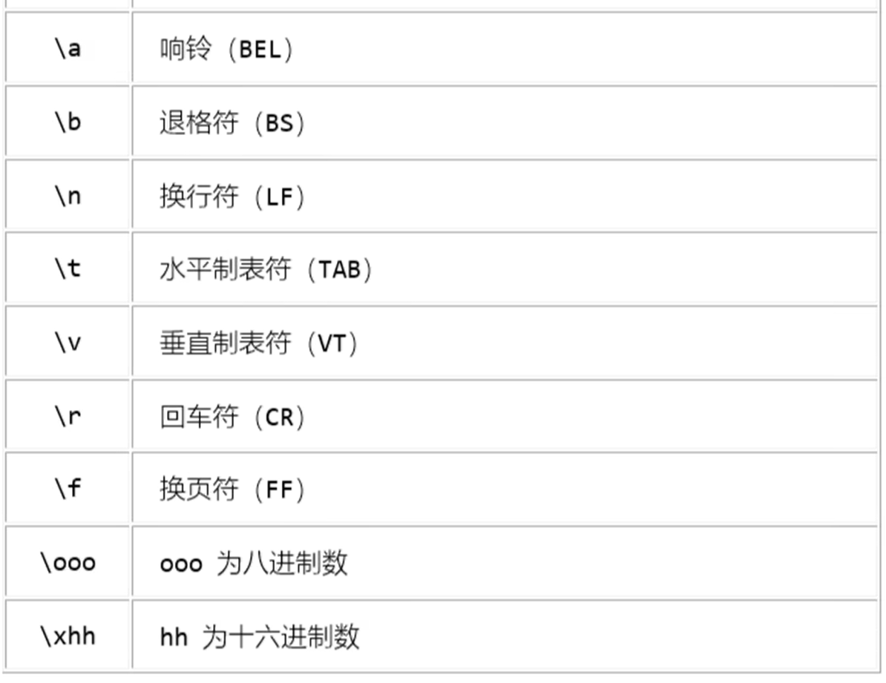
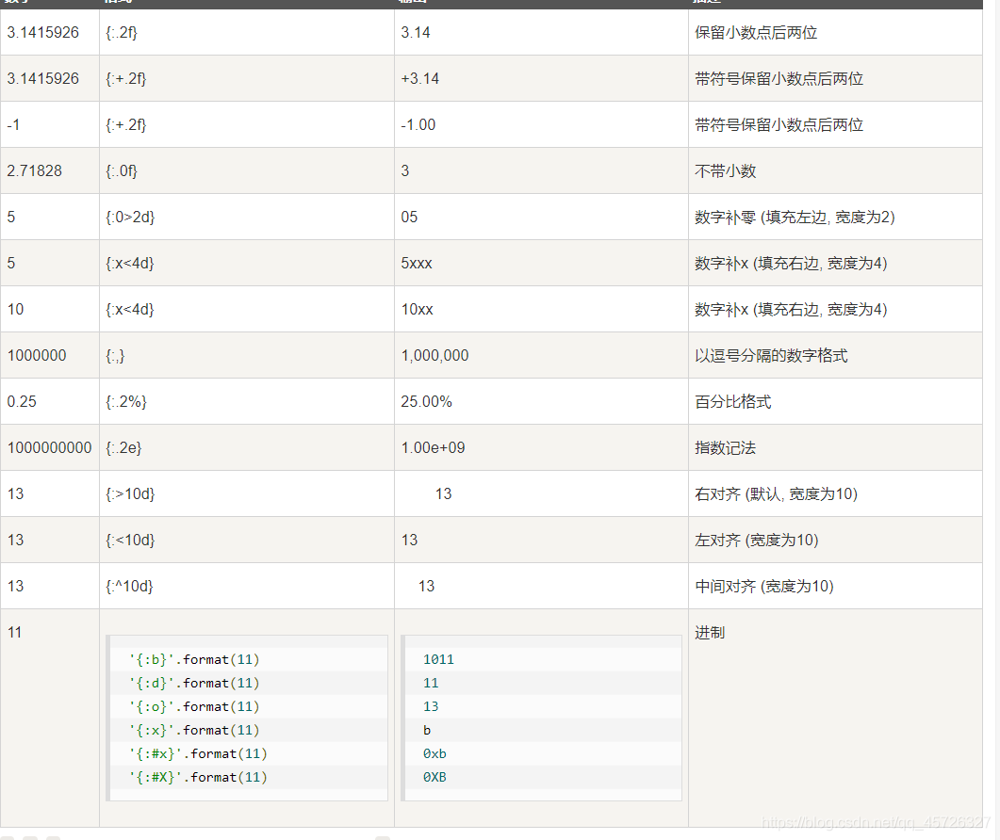
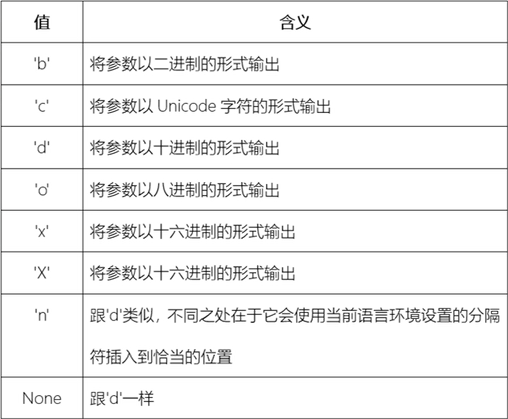
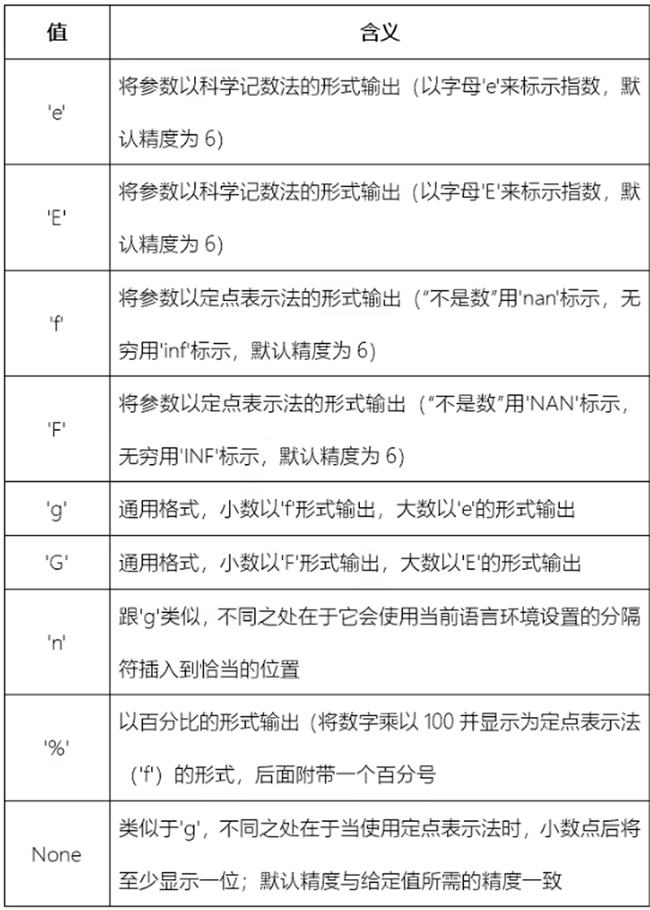
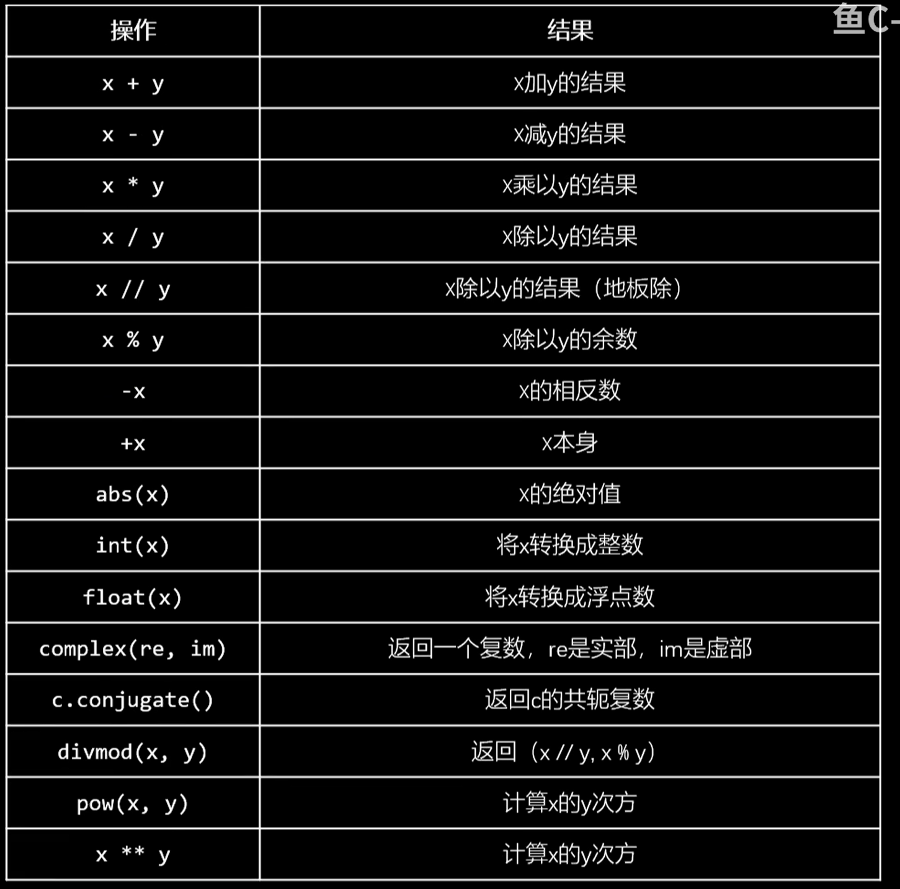
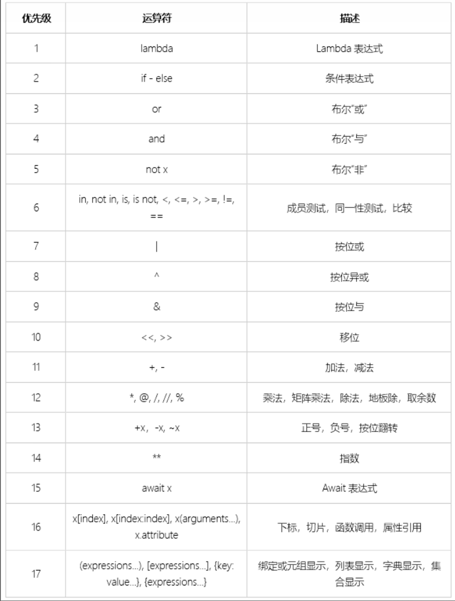

Python基础知识学习笔记(基于其他语言基础)
前言
个人情况：
一：变量
- python语句不用写分号，花括号，靠缩进来区分
- python中定义变量的时候，不需要在变量前声明变量类型，而C语言和JAVA需要，
- 原因：python是一个动态语言，变量的类型取决于值的类型，也就是说值了类型决定了变量的类型如下图所示。因此定义变量时必须给变量赋值，因为只有这样，变量的类型才能确定。而JAVA和C是一个静态语言，一旦变量指定了类型，运行中就不能修改类型。
- 使用细节：变量不能以数字开头，大小写区分严格。
二：字符串
python的字符串可以用“”和‘’,这样可以代替转义字符来解决文本内含有“”或‘’的问题（当然个人更倾向于使用转义字符）
制表符摘要：
- 当类似路径的东西要大量添加制表符来表示正常的\，我们可以使用原始字符串来写：
- r(“abc\def\ghi”)，原始字符串的转义字符将不再有效。
- 反斜杠写在行末有意义的，字符串还没结束
长字符串Triple quoted,当有长段字符串，不想用转义字符来换行时，可以用三个引号括起来表示长字符串“”” “””，单引号双引号都行。
- 字符串的其他方法：
- capitalize() 按照句首大写，其他小写的格式返回一个新的字符串
- casefold() 返回一个所有字母都小写的字符串
- title() 返回一个单词首字母大写，其他小写的字符串
- swapcase() 返回一个和原字符串大小写翻转的字符串
- upper() 返回所有字符全部大写的字符串
- lower() 返回所有字符全部小写的字符串
- 对齐方法：如果int比原字符串长度短，返回原字符串
- center(int) 返回一个参数长度的字符串，左右用空格填充
- ljust(int) 和center一样，但左对齐
- rjust(int) 和center一样，但右对齐
- 以上方法可以有第二个参数，表示用什么东西填充
- zfill(int) 和ljust一样，但用0填充
- 字符串的其他方法：
2
- count(sub[,start[,end]])查找指定参数sub的出现次数,后两个参数可选，指定查找范围
- find(char)从左往右查找参数第一次出现的索引（找不到就返回-1）
- rfind(char)从右往左查找参数第一次出现的索引（找不到就返回-1）
- index()和rindex()与find()/rfind()类似，但找不到就抛出异常
- expendtabs(int)返回：指定字符串中的tab全部替换成空格，int表示每个tab换成的空格个数
- replace(old,new)返回：指定字符串old换成new
- makestrans(“abcdefg”，“1234567”)根据转换表格把前面参数的替换成后面参数的字符
3
- startswitch(char[,start[,end]])和endswitch(char[,start[,end]])判断指定字符是否在开头（末尾），并返回true或者false
- isupper()判断是否全部是大写
- isalpha()判断是否全部是字母构成
- isspace()判断是否全部是空白构成
- isprintable()判断是否可打印
- isdecimal()，isdigit(),isnumber()都是用于判断数字的
4
- lstrip()去除左侧空白
- rstrip()去除右侧空白
- strip()去除左右空白
- 以上三个方法都可以填入一个字符串参数（默认none），表示去除的字符，他是按照单个字符去匹配去除的
- removeprefix(String)指定删除字符串的指定前缀（整个字符串而非单个字符匹配）
- partition(String)以第一个指定的字符串进行分割，返回一个三元组
- split(String , int)按照指定的字符串从左往右分割成多个元组，int不填默认-1，如果填入大于0的整数，则表示切几次
- rsplit(String,int)从右往左切
- splitline()按行切割，返回元组
- join()用调用者作为分隔符对参数内的元组或序列进行拼接（相比于用加号，这种方式效率更高）
5
- format:(这一部分写得并不清楚，推荐去更详细的文档查阅，我这里推荐一篇别人的笔记)链接)
- python可以在字符串里面用{}作为占位符，然后用字符串调用format()，参数里面填入多个元素，format()里面的元素会和{}一一对应
- {}里面可以填入数字，表示和format()里面元素的对应关系（按索引），一个元素可以被多次引用。
- 想输出{}，可以用花括号注释花括号：
{{}}，可以在参数里面直接填入{}
- format:(这一部分写得并不清楚，推荐去更详细的文档查阅，我这里推荐一篇别人的笔记)链接)
6
- 7
- ^ 居中 后面带宽度
- < 左对齐 后面带宽度
- > 右对齐 后面带宽度
- : 后面带填充的字符，只能是一个字符，不指定则是默认用空格填充
- 
- {:b}{:c}{:d}…….format(int)
- 
- {: }.format(float)
- 
- 7
f-字符串(语法糖)
三：输入输出的演示
写个代码小练习来演示python中的输入输出语句以及if else语法：
1
2
3
4
5
6
7
8
9temp = input("猜猜我心里想的数字是什么?")
guess = int(temp)
if guess == 8:
print("你猜对了")
print("猜错了也没奖励")
else:
print("猜错了，我想的是8")
print("游戏结束，不玩了")
四：数据类型
- 整数：python整数长度不受限制，也就是说有无限大的精度
浮点数：python的浮点数和c语言一样是采用IEEE754的标准来存储的，因此具有一定的误差
- 如何精确计算浮点数？
- ```python
import decimal
a = decimal.Decimal(‘0.1’)
b = decimal.Decimal(‘0.2’)
print(a + b)//输出0.3
c = decimal.Decimal(‘0.3’)
print(a + b == c)//输出True1
2
3
4
5
6- <font color = green>科学计数法（E记法）：</font> 5e-05表示5*10的负5次方
- <font color = green>复数：</font>代码例子：
- ```python
x = 1 +2j //定义一个复数
print(x.real)//获取复数的实部，输出1.0
print(x.imag)//获取复数的虚部，输出2.0
用bool()函数可以直接返回true和false。以下是结果为false的情况：
python支持的数据运算：
- 
- 注：
- pow()可以传入第三个参数，在进行前两个参数的幂运算后对第三个参数进行取模运算。
- x//y是对结果向下取整，不是截取整数。
- and和or是短路逻辑
- 运算符优先级(数字大优先级更高)：
六：分支和循环
- python代码块不依据花括号来区分代码块，依靠严格的缩进。
- 以下举例几片代码来演示语法：
1
2
3
4
5
6if 3 < 5:
print("我在里面1")
print("我在里面2")
else:
print("否则")
print("我在外面")
1 | //非严格代码 |
1 | age= 19 |
1 | score = 66 |
1 | love = "yes" |
1 | while True: |
1 | for 变量 in 可迭代对象: |
range():
- range(stop)
- range(start,stop) //包头不包尾
- range(start,stop,step) //step为步长
字符串
- 列表
- 元组
- 字典
- 集合
- 文件对象
- 自定义实现了
__iter__()或__getitem__()方法的类
七：列表
列表可以存储不同的数据类型，可以塞函数对象1
list = [1,2,3,4,5,"上山打老虎"]
- 也是可迭代对象
- 索引：
- 正序索引和c/c++/Java的数组一样
- 反序：

- 切片：
- list[int a:int b]对[a,b)进行切片,包左不包右
列表常用方法（增删改查）
- 增（以变量名为list的列表举例） - append() 每次增加一个，添加在列表的末尾 - extend() 添加一个可迭代对象 - \[len(list):]=\[6,7,8] 把6，7，8添加到列表末尾 - insert(插入的位置，插入的元素) 在指定位置插入元素
- 删 - remove(元素内容) 删除指定元素 - pop(索引) 删除目标索引元素 - clear() 清空列表
- 改
- list[index] = “xxx” 直接赋值
- list[index:] = “xxx”,”xxx” 将index及以后的元素全部替换
- list.sort() 排序
- list.reverse() 反转
- 以上两个方法可以结合起来使用：
- list.sort(reverse=True)
- 查 - list.count(元素) 查找某个元素出现的次数 - list.index(元素) 查找某个元素第一次出现的索引 - list.index(元素，start,end) 第二第三个参数指定查找范围 - list.copy() 返回值为整个列表(浅拷贝)
list1+list2 对两个列表进行拼接
- list1*n 复制几次列表进行拼接
列表也可以嵌套，并且直接对外层列表的变量名进行打印，可以直接得到整个列表每一个元素的值（包括内层）
- 注意：list * n并不是对对象进行拷贝n次，只是对其重复引用，因此如果我们用这种方式初始化一个嵌套列表，实际上内层列表地址值都是相同的，指向同一个列表。
copy模块(浅拷贝和深拷贝):
1
2
3import copy
list1 = copy.copy(list)//潜拷贝
list2 = copy.deepcopy(list)//深拷贝- 列表推导式（处理全是数值的列表里面的元素）效率比循环高(相应的还有生成器推导式和字典推导式)
- [expression for target in iterable if condition]
- 解释：target为iterable可迭代对象的元素，将iterable进行迭代并拿出里面的target元素，然后expression相当于循环体，用于处理满足condition的元素，最终返回一个新的列表。
- if condition 是可以省略的
- 由于这个底层是用c语言实现的，所以比用python自己写for循环效率要高得多。
- 代码实现例子：
1
2
3x = [1,2,3,4,5,6,7]
x = [i * 2 for i in x]
//那么x最终的结果就是[2,4,6,8,10,12,14]
- 列表推导式（处理全是数值的列表里面的元素）效率比循环高(相应的还有生成器推导式和字典推导式)
八：元组
- 语法上和列表的区别就是元组不用方括号括起来，而是用小括号括起来
- 元组不可修改
九：函数
为了解决重复性代码，减少代码冗余
定义函数： 传入参数不需要写数据类型,return可以不写，并且函数名前不用写返回类型，不写return默认返回None1 | def myfunc(name,times): |
1 | def myfunc(name,what="love",times): |
收集参数:
- 当函数不知道用户会输入多少个参数时，可以用收集参数(*形参)
- 代码示例：
```python
def myfunc(*args):print("有{}个参数".format(len(args))) print("第二个参数是{}".format(args[1])) return 1,2,3myfunc(“arfhterkj”,”srtjerg”,”tyjfd”,”asdg “)
1
2
3
4
5
6
7
- return里面可以返回多个数据,如上：
- 实际上是利用了元组对其**打包**，输出的是（1，2，3）
- 甚至可以对其**解包**:
```python
x,y,z = myfunc();在调用函数的时候，(*参数)可以给元组解包
1
2
3
4
5
6
7
8
9
10
11
12myfunc(*args)
- <font color = green>global语句</font><font color = red>在函数里面声明这个变量是全局变量x，并且可以在里面修改全局变量的值</font>
```python
x=888
def myfunc():
global x
x = 520
print(x)
myfunc()//输出520
print(x)//输出520- 嵌套函数在外部不能直接调用内部函数
并且内部函数不会对外部函数的值直接发生改变，如果想要内部函数改变外部函数，可以使用nonlocal语句进行声明:
1
2
3
4
5
6
7
8
9def funA():
x = 520
def funB():
x=880
print("In funB,x=",x)
funB()
print("In funA,x=",x)
funA()当作用域覆盖冲突时，python会按这个规则来选择：LEGB1
2
3
4
5
6
7
8
9
10def funA():
x = 520
def funB():
nonlocal x
x=880
print("In funB,x=",x)
funB()
print("In funA,x=",x)
funA() - L————Local局部作用域
- E————Enclosed嵌套函数的外层函数作用域
- G————Global是全局作用域
- B————Build-In内置作用域
闭包
- 如果我们外部函数里面不调用内部函数 ，改用return返回内部函数，那么他会返回对内部函数的引用。如果我们把这个引用返回给一个变量，那这个变量可以直接调用内部函数
1
2
3
4
5
6
7
8
9def myfunc():
x = 520
def funB():
x=880
print(x)
return funB
funny = funA
funny()//直接调用funB - 闭包就是利用嵌套函数的外层作用域具有记忆能力这个特性，让数据保存在外层函数的参数或者变量中实际开发中，如果我们想对外层函数的某些数据保护起来，不想被其他东西修改，就可以使用闭包
1
2
3
4
5
6
7
8
9
10
11def power(exp):
def exp_of(base):
return base ** exp
return exp_of
square = power(2)//这里square记录的exp值就是二
cube = power(3)//这里cube记录的exp值就是三
square(2)//这样调用square就可以直接得到平方
square(5)
cube(2)//调用cube就可以 直接得到立方
cube(5)
我们也可以把函数本身作为参数传入另一个函数1
2
3
4
5
6
7
8
9def myfunc():
print("正在调用myfunc...")
def report(func)
print("我要开始调用函数了")
func()
print("我调用完函数了")
report(myfunc)
装饰器：(其实原理就是闭包，先来看用闭包实现该功能的代码)1
2
3
4
5
6
7
8
9
10
11
12
13
14
15
16def time_master(func):
call_func():
print("开始运行程序..")
start = time.time()
func()
stop = time.time()
print("结束程序运行")
print(f"一共耗费了{(stop - start):.2f}秒")
return call_func
def myfunc():
time.sleep(2)
print("I love FishC.")
myfunc = time_master(myfunc)
myfunc()
利用了装饰器的语法糖后：1
2
3
4
5
6
7
8
9
10
11
12
13
14
15
16def time_master(func):
call_func():
print("开始运行程序..")
start = time.time()
func()
stop = time.time()
print("结束程序运行")
print(f"一共耗费了{(stop - start):.2f}秒")
return call_func
def myfunc():
time.sleep(2)
print("I love FishC.")
myfunc()
(实际上上面两种代码的功能是完全一样的)（可以同时调用多个装饰器）
那么如何给装饰器传递参数呢？
答案：@fanc(参数)
lambda匿名函数表达式(简化代码)lambda arg1,arg2,arg3,...argN : expression
代码演示1：(原来写法)1
2
3
4def squareX(x):
return x * x
square(3)
代码演示2:(lambda)1
2squareY = lambda y : y * y
squareY(3)
可以把lambda塞到列表里面(因为lambda返回的是函数对象，而列表里面可以存储函数对象)1
2
3y = [lambda x:x*x,2,3]
y[0](y[1])//输出4
y[0](y[2])//输出9
可以丢给一个迭代器迭代1
2mapped = map(lambda x : ord(x) + 10,"Ayeez")
print(list(mapped))
生成器可以保留函数的数据，每调用一次返回一个数据,是一种特殊的迭代器
定义一个生成器只需要在函数中用yield代替return语句就可以了1
2
3
4
5
6
7
8
9
10def counter():
i = 0
while i <= 5:
yield i
i += 1
print(counter())//得到的是一个生成器对象
for i in counter():
print(i)
生成器和列表推导式最大的区别就是列表推导式会一次性把所有数据生成出来，二生成器一次只生成一个数据
递归
1
2
3
4
5def factRecur(n):
if n==1:
return 1
else:
return n * factRecur(n-1)
特别感谢
特别感谢rain对本篇笔记做出的指正
 微信
微信 支付宝
支付宝


关注一下我的各个社交媒体账号吧！！！↑↑↑
博主建了一个QQ群，快进来玩吧！
↓↓↓↓↓↓↓↓↓↓↓↓↓↓↓